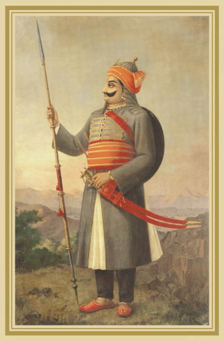

Swami Vivekananda
A spiritual genius of commanding intellect and power, Swami Vivekananda crammed immense labor and achievement into his short life (1863–1902). Born Narendranath Datta, Vivekananda in his youth was fascinated by the agnostic Western schools of philosophy. 
Chhatrapati Shivaji
Chatrapati Shivaji Maharaj was the founder of the Maratha Empire in western India. He is considered to be one of the greatest warriors of his time and even today, stories of his exploits are narrated as a part of the folklore. With his valor and great administrative skills, Shivaji carved out an enclave from the declining Adilshahi sultanate of Bijapur. It eventually became the genesis of the Maratha Empire. After establishing his rule, Shivaji implemented a competent and progressive administration with the help of a disciplined military and well-established administrative set-up. Shivaji is well-known for his innovative military tactics that centered around non-conventional methods leveraging strategic factors like geography, speed, and surprise to defeat his more powerful enemies. -1591292658.jpg)
Maharana Pratap
Pratap Singh was born on May 9, 1540, in Kumbhalgarh to Rana Uday Singh ll and Rani Jeevant Kanwar. He is hailed as the hero of Rajasthan and several ballads and folklores are weaved around episodes of his heroic spirit, sacrifice, and resilience. When the brave Mewari Raja, beaming with pride used to stand against his enemies, even the mightiest of warriors used to get terrorized by just a glimpse of him. Maharana Pratap was 7 feet and 5 inches tall and carried an 80-kilogram spear and two swords, which collectively weighed 208 kilograms. The armor he used to wear weighed 72 kilograms. He belonged to the lineage of Rajput kings who were known far and wide for their valor and pride like Rana Hammir Singh, Rana Kumbha, Rana Sangha who fought until their last breath but never let down the pride and glory of their land. 